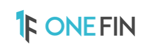

<nav class="navbar navbar-expand-sm navbar-dark" >
  <div class="container-fluid">
      
      <button class="navbar-toggler" type="button" data-bs-toggle="collapse" data-bs-target="#mynavbar">
        <span class="navbar-toggler-icon"></span>
      </button>
      <div class="collapse navbar-collapse" id="mynavbar">
        <ul class="navbar-nav me-auto">
          <li class="nav-item"></li>
        </ul>
  
        <form class="d-flex">
          <a class="navbar-brand" href="javascript:void(0)">
             <i class='fas fa-user' *ngIf = "status == 'Logout'"></i>
          </a>
          <button class="btn btn-primary" type="button" (click)="loginLogout()" #statusRef>{{status}} 
            <span *ngIf = "status == 'Login'"> <i class="fa fa-sign-in" aria-hidden="true"></i> </span>
            <span *ngIf = "status == 'Logout'"> <i class="fa fa-sign-out" aria-hidden="true"></i> </span>
          </button>
        </form>
      </div>
  </div>
</nav>